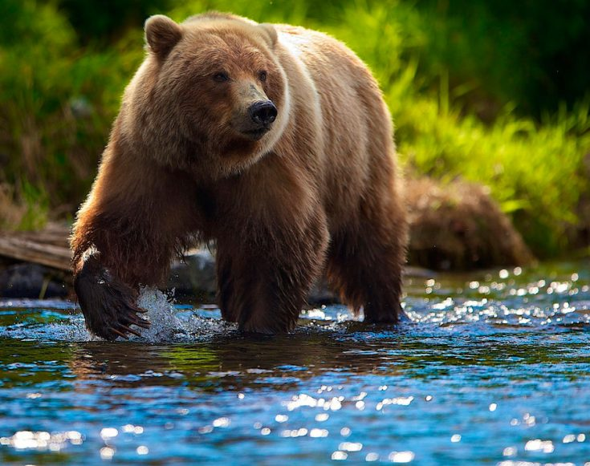

трам пам пам
Бурый медведь — типичный лесной обитатель. Только в некоторых районах Крайнего Севера он проникает в тундру, да в горах летом заходит в зону субальпийских высокогорных лугов. Чаще всего он встречается в обширных таежных массивах, изобилующих буреломом, моховыми болотами и расчлененных речками, а в горах — ущельями. Предпочтение зверь отдает лесам с темнохвойными породами — елью, пихтой, кедром, под пологом которых изобилует таежное крупнотравье. На границе тайги и тундры зверь держится в так называемом “криволесье" приречных пойм. В горах он живет среди широколиственных лесов, а если их нет, то среди арчевников.

Бурые медведи, в отличие от белых, в большинстве своем оседлы. Каждый индивидуальный участок, занятый одним зверем, весьма обширен, покрывает площадь порой в несколько сот квадратных километров. Он охватывает несколько разных территорий, на которых зверь находит себе пищу или убежище: это кормовые, "дневочные", а также зимние (“берложные”) территории. Границы участков обозначены слабо, а в горных местностях, где рельеф сильно изрежен, вообще практически отсутствуют.
Подробное описание смотри на newsland
Мевдеди бывают:
Медведи питаются:
В местах постоянного обитания медведей их регулярные перемещения по территории обозначены хорошо заметными тропами, тянущимися вдоль речек и через перевалы из одной долины в другую. Они связывают между собой участки, где медведь гарантированно находит себе пищу. На переходах дорожка его следов стелется прямо, завалы же и захламленные места он старается обходить стороной. Там, где медведей много, лесные массивы прорезаны путями их странствий во всех направлениях. Такими тропами, ведущими по тайге или горам по наилучшему маршруту, пользуются другие звери, а порой и люди. И действительно, иногда они похожи на людские дорожки — вполне утоптанные, шириной до полуметра, очищенные от травы. Только, в отличие от человечьих, вдоль медвежьих троп на ветвях нередко висят “почески” — клочки медвежьей шерсти, а на стволах особо приметных деревьев остаются медвежьи метки — “закусы” зубами и ободранная когтями кора. Возможно, они служат опознавательными знаками для других медведей, показывая, что участок занят.